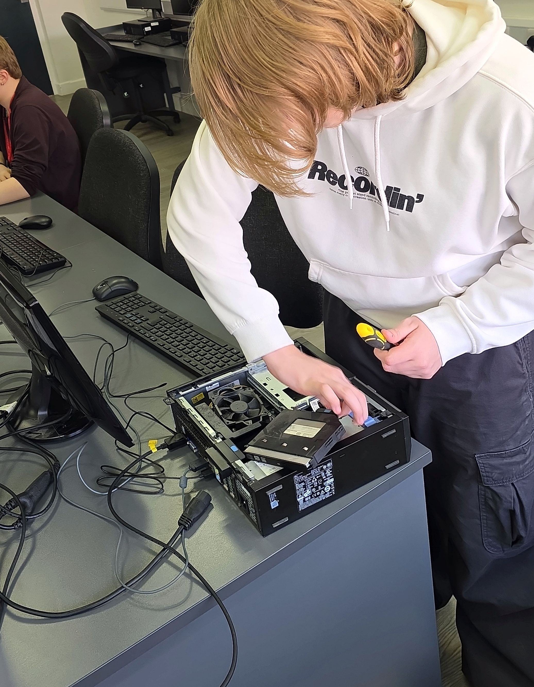

<!DOCTYPE html>

<html>
	<head>
		<title> | Digital Portfolio | </title>
		<style>
			body {
				font-family: Segoe, "Segoe UI", "DejaVu Sans", "Trebuchet MS", Verdana, "sans-serif";
				background-color: #C5DCFC;
				margin: 0 auto;
				padding: 20px;
				border-style: inset;
				border-color: darkblue;
				border-bottom: 200px;
				max-width: 1000px;
				overflow: auto;
			}
			h1 {
				color: #44763E;	
			}
			p {
				color: #161716;
			}
			
			h1 {
				text-align: center;
			}
			
			img {
				border-style: outset;
				border-color: darkblue;
			}
			
			img#top {
				width: 100%;
				height: auto;
				display: block;
				margin-bottom: 20px;
			}			a:link {color: #689F38}
			a:visited {color: #234416}
			a:hover {color: #66BB6A}			a:link {color: #689F38}
			a:visited {color: #234416}
			a:hover {color: #66BB6A}

			a {
				font-size: 26px;
			}
			
			.text {
				max-width: 600px;
				height: 200px;
				padding: 30px;
				border: 2px solid #235099;
				box-sizing: border-box;
				display: block;
				font-size: 16px;
				resize: none;
				align-self: center;
				margin: 0 auto;
				gap: 20px;
				
			}
			
			.gap {
			}

			.center {
					display: grid;
					place-items: center;
					height: 45vh;
			}
		</style>
	</head>
</html>

<body>
		
		<p align="center">
			<a href="index.html">Homepage</a>
			<a href="u1.html">Unit 1</a>
			<a href="u2.html">Unit 2</a>
			<a href="u8.html">Unit 8</a>
			<a href="u13.html">Unit 13</a>
			<a href="u14.html">Unit 14</a>
			<a href="u17.html">Unit 17</a>
		</p>
	<h1> Unit 14 | Installing and Maintaining Hardware </h1>
	
	<p align="center" class="text">Unit 14 is how I have installed and maintianed hardware. Like what I have stated in Unit 14, this covers on how I repaired and upgraded computers. This unit is my favourite one out of all different units because it is really fascinating to see how I can manage to fix computers, maintain them and understand safety and precautions on how to repair computers, like checking for ESD (electrostatic discharge).</p>
	
	<div class="center">

<p class="text" style="text-align: center;" style="text-size-adjust: auto;"> This is me, putting back the optical drive after reseating the new RAM onto the computer. After that process I have also installed a graphics card, giving me a wide knowledge on how PCIe's work and how easy it was to install onto the motherboard.</p>
</div>
	
</body>